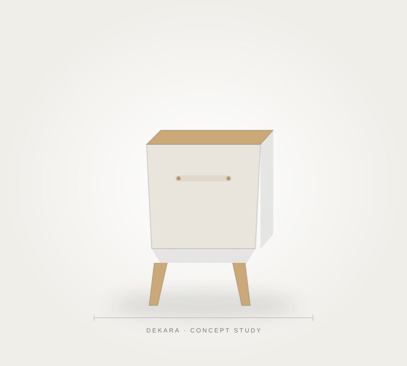
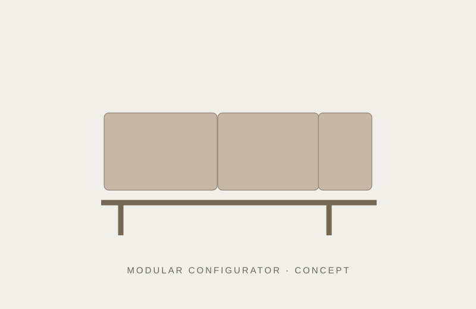
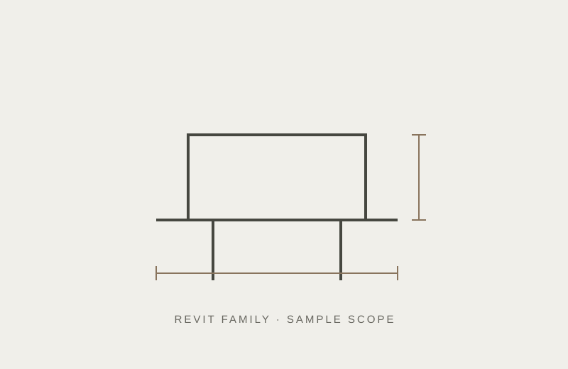

Revit/BIM
Revit families & BIM
Parametric furniture content with clear 2D and 3D representation.
From $250Package details ↗
Furniture 3D · Revit/BIM · AR configurators
Models, materials, BIM content and production-ready drawings, made in-house for furniture brands and the people who specify them.
Furniture 3D, Revit/BIM & AR Configurator Specialist | Architectural Draughtsman
Johannesburg · SAST · overlaps UK/EU and US mornings
Choose your route
Let customers configure a range and turn choices into a quote, cut list or drawing.
Find the right path ↗02Specify well-built Revit families and download useful project resources.
Find the right path ↗03Add optimized 3D and AR product assets to a furniture catalogue.
Find the right path ↗04See the process, compare packages and send a concise project brief.
Find the right path ↗What I build
Revit/BIM
Parametric furniture content with clear 2D and 3D representation.
Shop drawings
Plans, elevations, sections, hardware schedules and cut lists.
AR models
Optimized GLB and USDZ assets prepared for product pages and AR.
Configurators
Finish options, pricing rules and manufacturing outputs in one flow.
The useful part
Live proof · Dekara Designs
Change cabinet colour, timber and handle. The illustrated concept and price update immediately.
Open the configurator
Selected work

Configurators · Concept
A concept product configurator showing finish selection, live pricing, dimensions and a clear path from product image to interactive 3D.
Explore work ↗
Configurators · Concept
A modular furniture builder concept informed by the existing Dekara Designs demo.
Explore work ↗
Revit/BIM · Concept
A sample scope for parametric furniture families, type catalogs and clean 2D/3D representation.
Explore work ↗How it works
Share the product list, references, CAD or photographs, finishes and deadline.
Receive a written quote with deliverables, milestones and revision boundaries.
Review working assets against the agreed brief and checkpoints.
Receive organized files, notes and the agreed handover.
Start with the product and the output
Send the product count, the source files you have and the formats you need.
Send a brief